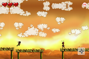
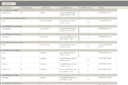
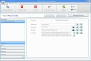

<div class="extra-text">Some of my PERSONAL projects (Does not include Professional Commitments):</div>
<ul id="portfolio-list">
    <li class="illustration print">
        <a title="" rel="letsbat3d" class="none">
            
            <h2 class="title">LetsBat 3D</h2>
            <span class="categorie">3D Batting Simulation Game</span>
        </a>
    </li>
    <li class="webdesign">
        <a href="portfolio/letsbat.png" title="A Cocos 2D batting simulation game for iOS devices" rel="portfolio"
           class="folio">
            
            <h2 class="title">LetsBat </h2>
            <span class="categorie">A 2D batting game for iOS</span>
        </a>
    </li>
    <li class="photoghraphy">
        <a href="portfolio/letsrun.png" title="A Cocos 2D Side Scrolling game for iOS devices" rel="portfolio"
           class="folio">
            
            <h2 class="title">LetsRun</h2>
            <span class="categorie">Run & Shoot game for iOS</span>
        </a>
    </li>
    <li class="animation print">
        <a href="portfolio/letspark.png" title="A Cocos 2D Car Parking game for iOS devices" rel="portfolio"
           class="folio">
            
            <h2 class="title">LetsPark</h2>
            <span class="categorie">Parking Game for iOS</span>
        </a>
    </li>
    <li class="animation print">
        <a href="portfolio/andro-settings.png"
           title="With Andro Settings you can turn ON/OFF various system settings like Wifi, Data, AutoRotate etc"
           rel="portfolio" class="folio">
            
            <h2 class="title">AndroSettings</h2>
            <span class="categorie">Android Settings for v2.1</span>
        </a>
    </li>
    <li class="animation print">
        <a href="portfolio/andro-smsfilter.png"
           title="With Andro SMSFilter, you can sort out incoming messages as Junk or otherwise, based on filters you have setup."
           rel="portfolio" class="folio">
            
            <h2 class="title">Andro SMSFilter</h2>
            <span class="categorie">Android Junk SMS Filter</span>
        </a>
    </li>
    <li class="animation print">
        <a href="portfolio/andro-notes.png"
           title="Andro Notes enables you to create simple notes and password protect them" rel="portfolio"
           class="folio">
            
            <h2 class="title">Andro Notes</h2>
            <span class="categorie">Android Notes for v2.1</span>
        </a>
    </li>

    <li class="animation print">
        <a href="portfolio/knocks-grid.png"
           title="KNOCKS WinGrid, an advanced and highly extensible WinForms grid control for your .NET applications."
           class="folio">
            
            <h2 class="title">GridView Controls</h2>
            <span class="categorie">KNOCKS WinControls Grids</span>
        </a>
    </li>
    <li class="animation print">
        <a href="portfolio/knocks-calendars.gif"
           title="KNOCKS Calendars give you outlook style calendars for your .NET applications" rel="portfolio"
           class="folio">
            
            <h2 class="title">Calendar Controls</h2>
            <span class="categorie">KNOCKS WinControls Calendars</span>
        </a>
    </li>
    <li class="animation print">
        <a href="portfolio/knocks-docking.gif"
           title="KNOCKS Docking Manager allows VS.NET or Office styled docking windows control for your WinForms applications."
           rel="portfolio" class="folio">
            
            <h2 class="title">Docking Controls</h2>
            <span class="categorie">KNOCKS Docking Extender</span>
        </a>
    </li>
    <li class="animation print">
        <a href="portfolio/knocks-ribbon.png"
           title="KNOCKS Ribbon Extender allows Office 2007 styled Ribbon look and feel for your WinForms applications."
           rel="portfolio" class="folio">
            
            <h2 class="title">Ribbon Controls</h2>
            <span class="categorie">KNOCKS Ribbon Extender</span>
        </a>
    </li>
    <li class="animation print">
        <a href="portfolio/knocks-instru.jpg"
           title="The KNOCKS Instrumentation library is a set of components built to display meters, guages, dials, switches for a WinForms HMI application."
           rel="portfolio" class="folio">
            
            <h2 class="title">Instrumentation Suite</h2>
            <span class="categorie">KNOCKS Instrumentation Suite</span>
        </a>
    </li>
    <li class="animation print">
        <a href="portfolio/knocks-shell.jpg"
           title="KNOCKS WinShell Suite mimics all standard Windows Explorer features like Thumbnail, Group and Details/Report View, icons, context menus, drag drop, renaming, info tips and many others."
           rel="portfolio" class="folio">
            
            <h2 class="title">Shell Controls</h2>
            <span class="categorie">KNOCKS Shell Controls</span>
        </a>
    </li>
    <li class="animation print">
        <a href="portfolio/knocks-skinner.gif"
           title="KNOCKS Skinner helps build skinnable WinForms application, like the ever popular WinAmp UI."
           rel="portfolio" class="folio">
            
            <h2 class="title">Skinner Extender</h2>
            <span class="categorie">KNOCKS Skinner</span>
        </a>
    </li>
    <li class="animation print">
        <a href="portfolio/wintweakz-disksuite.jpg"
           title=" DiskSuite provides functionalities to manage user-level and system-level disk operations, like clean-up and optimization, data and free space defragmentation, and disk repair"
           rel="portfolio" class="folio">
            
            <h2 class="title">DiskSuite</h2>
            <span class="categorie">WinTweakz Disk Manager</span>
        </a>
    </li>
    <li class="animation print">
        <a href="portfolio/wintweakz-passwordsafe.jpg"
           title="Store all your passwords and access codes on one digital key ring, protected with a single non-breakable password."
           rel="portfolio" class="folio">
            
            <h2 class="title">PasswordSafe</h2>
            <span class="categorie">WinTweakz Password Manager</span>
        </a>
    </li>
    <li class="animation print">
        <a href="portfolio/wintweakz-privacyguard.jpg"
           title="PrivacyGuard guarantees your privacy by ensuring all traces of your online Internet and computer activities are permanently erased and unrecoverable on your PC."
           rel="portfolio" class="folio">
            
            <h2 class="title">Privacy Guard</h2>
            <span class="categorie">WinTweakz Traces Manager</span>
        </a>
    </li>
    <li class="animation print">
        <a href="portfolio/wintweakz-regcleaner.jpg"
           title=" With RegCleaner you can safely clean, repair and optimize the Windows® registry with a few simple mouse clicks!"
           rel="portfolio" class="folio">
            
            <h2 class="title">Registry Cleaner</h2>
            <span class="categorie">WinTweakz Registry Optimizer</span>
        </a>
    </li>
    <li class="animation print">
        <a href="portfolio/wintweakz-vault.jpg"
           title="WinTweakz Vault is your personal Virtual Safe to store your private documents, images, videos and files to protect them from prying eyes and data theft."
           rel="portfolio" class="folio">
            
            <h2 class="title">Vault</h2>
            <span class="categorie">WinTweakz Data Encrypter</span>
        </a>
    </li>
</ul>